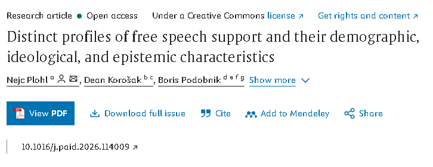

https://www.sciencedirect.com/science/article/pii/S0191886926003739
슬로베니아 마리보르 대학교 연구팀이 563명의 유럽 성인 남녀를 대상으로
온라인 설문조사를 실시했다.
설문을 진행한 사람들은
개인을 직접 공격하는 모욕적인 발언,
인간관계에 긴장을 일으키는 의견 차이에 대한 발언,
상식에서 벗어난 비상식적인 발언,
사회적 결속을 위협하는 사회적 분열을 일으키는 발언.
이러한 표현을 얼마나 참을 수 있는지 측정했다.
그 결과, 응답자들은 대개 3가지 부류로 나눠졌다.
첫 번째 부류는 조건부 관용적인 태도를 보였다.
이들은 전체 응답자 중 57%를 차지했다.
발언 내용을 허락할지 여부는 진술 내용에 따라 달랐다.
모욕적인 발언과 의견 차이 발언은 관대하게 대응했다.
하지만 비상식적인 발언과 사회적 분열을 일으키는 발언은
엄격하게 판단했다.
두 번째 부류는 인원 중 20%를 차지하며,
어떤 발언도 절대 용납하지 않았다.
세 번째 부류는 모든 발언을 수용했다.
모욕적 발언과 사회적 분열 발언을 포함한
모든 급진적 발언을 수용했다.
전체 인원의 23%를 차지했다.
연구팀은 개별 부류 간의 특성을 탐구했다.
참가자들은 공식 정보를 발표하는 과학자, 정치인, 언론인 중
진실과 사람들의 행복을 자신의 이익보다 우선시한다고
생각하는 비율이 몇 퍼센트인지 답했고, 신뢰 수준도 측정했다.
그 결과 집단 간 차이가 드러났다.
첫 번째, 조건부 관용 집단은 과학자, 정치인, 언론인 등
공적인 정보를 신뢰하는 경향을 보였다.
두번째, 모든 발언을 부정한 집단은
공적 정보를 대체적으로 신용했다.
반면 세 번째, 모든 발언을 수용한 집단은 반대로
공적인 정보를 믿는 것보다 음모론을 신용하는 경향을 보였다.
그러니까 간단하게 줄여서,
표현의 자유를 널리 받아들이는 사람일수록
오히려 공적으로 확인된 정보를 불신하는 경향을 보였다는
재미있는 조사 결과다.
물론 이번 조사로 그런 경향이 나왔다는 것이지,
이게 정답이란 소리는 아니니까 그점은 조심.
자유에는 책임도 따라야한다는 애들이 간과하는게 책임을 무겁게 달아놓은 자유는 자유가 아님.
과도한 책임의 무게에 대해 논할때 항상 어디서 주워들은 저 소리 짓껄여댐 ㅋㅋㅋ
그런식이면 북한도 체재 비판의 자유가 있음.
단, 걸리면 ㅈ되는 책임이 있을 뿐이지.